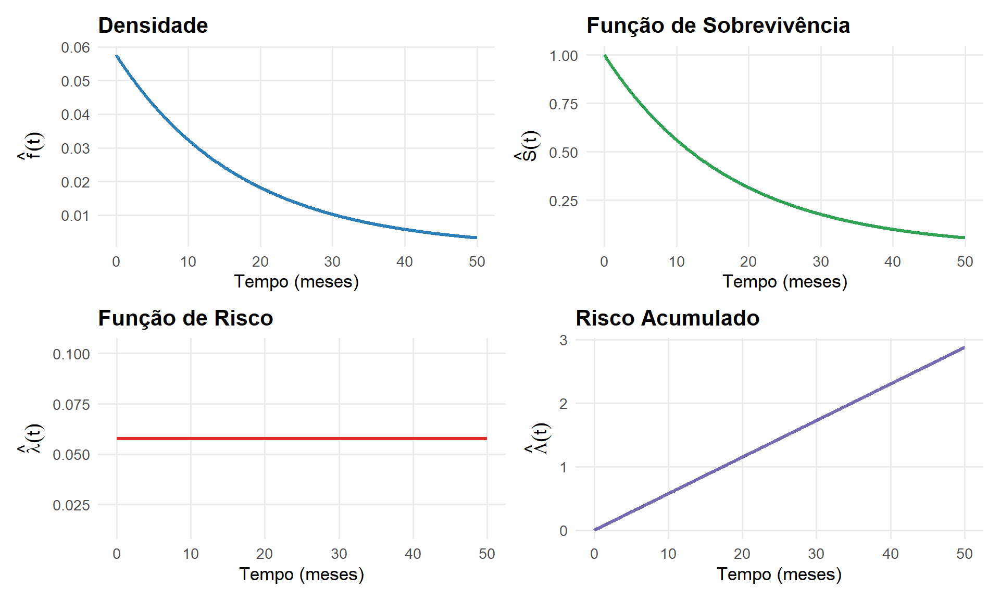
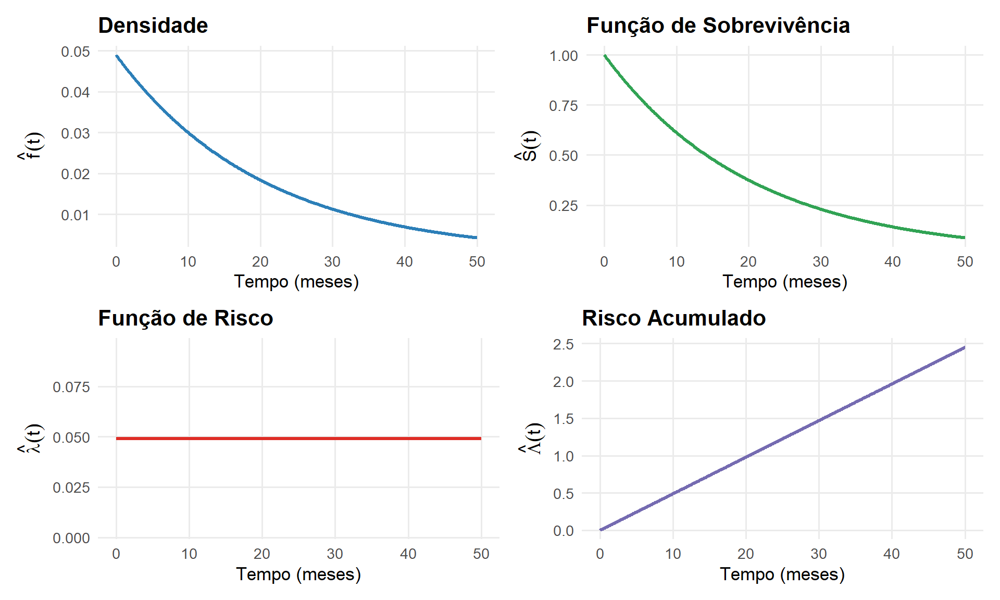
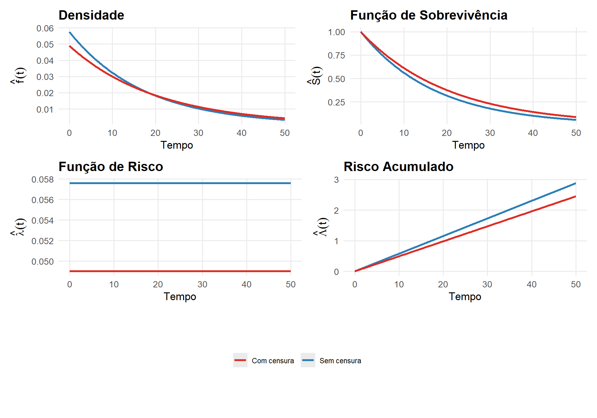

ESTIMAÇÃO DOS MODELOS PARAMÉTRICOS
Universidade Federal Fluminense
Os modelos probabilísticos vistos na aula anterior são caracterizados por quantidades desconhecidas, chamadas de parâmetros
Cada modelo possui uma estrutura própria:
Esses parâmetros são responsáveis por dar a forma geral da distribuição
Na prática, esses modelos ainda não estão completamente definidos
Em cada estudo com tempos de sobrevivência ou confiabilidade:
Um ponto importante nesses estudos é que os dados frequentemente apresentam censura.
Nesta aula, vamos entrar na etapa central da inferência paramétrica em sobrevivência e confiabilidade
Vamos estudar dois pilares fundamentais envolvendo os parâmetros de interesse em cada modelo paramétrico:
Em estatística, existem diferentes métodos de estimação pontual
Um dos mais conhecidos é o método dos mínimos quadrados
Porém, esse método não é adequado para dados de sobrevivência/confiabilidade
Em análise de sobrevivência, uma característica central dos dados é a presença de censura
O problema dos mínimos quadrados é que:
Isso o torna inadequado porque:
O método de máxima verossimilhança (MV) é o principal procedimento usado em modelos de sobrevivência/confiabilidade.
A ideia central é:
Em outras palavras:
Suponha, por exemplo, que o tempo de ocorrência até o evento de interesse segue uma distribuição Weibull
Para cada escolha de parâmetros:
O método de máxima verossimilhança escolhe:
Ou seja:
“All models are wrong, but some are useful.”
“Todos os modelos estão errados, mas alguns são úteis.”
A ideia por trás dessa frase é bem profunda (e muito alinhada com o que vamos trabalhar):
Nenhum modelo consegue representar perfeitamente a realidade — sempre há simplificações, suposições e omissões.
Mesmo assim, um modelo pode ser extremamente valioso se capturar bem os aspectos relevantes do fenômeno.
O foco não deve ser: “o modelo é verdadeiro?”
mas sim: “o modelo é útil para o meu objetivo?” (prever, explicar, inferir, etc.).
O método de máxima verossimilhança possui várias vantagens:
Vantagens principais:
Por isso, é o método padrão em análise de sobrevivência e confiabilidade
Vamos retornar ao exemplo de pacientes com câncer de bexiga
Interesse:
Dados observados (em meses):
Importante:
Ou seja:
Para ilustrar os métodos de inferência em modelos paramétricos de sobrevivência e condiabilidade, vamos trabalhar nesses dados inicialmente com a distribuição exponencial
Seja \(T\) a variável aleatória que representa:
Assumimos, inicialmente, que:
A distribuição exponencial será usada como modelo base por duas razões principais:
Essa distribuição é:
A partir dela:
\[ f(t) = \alpha e^{-\alpha t}, \quad t \geq 0 \]
Vamos obter um estimador para \(\alpha\), denotado por \(\hat{\alpha}\), a partir do método da máxima verossimilhança
A contribuição de cada um dos \(n\) tempos de ocorrência observados \(t_1, t_2, \ldots, t_n\) para a função de verossimilhança \(L(\alpha)\) é dada pela expressão:
\[ L(\alpha) = \prod_{i=1}^{n} f(t_i) = \prod_{i=1}^{n} \alpha e^{-\alpha t_i} = \alpha^{n} e^{-\alpha \sum_{i=1}^{n} t_i } \]
A função de log-verossimilhança \(\ell(\alpha)\) é dada por: \[ \ell(\alpha) = \ln L(\alpha) = n \ln(\alpha) - \alpha \sum_{i=1}^{n} t_i \]
Derivando em relação a \(\alpha\): \[ \frac{\partial \ell(\alpha)}{\partial \alpha} = \frac{n}{\alpha} - \sum_{i=1}^{n} t_i \]
Igualando a zero, obtemos o estimador de máxima verossimilhança: \[ \frac{n}{\hat{\alpha}} - \sum_{i=1}^{n} t_i = 0 \quad \Rightarrow \quad \hat{\alpha} = \frac{n}{\sum_{i=1}^{n} t_i} \]
Para os dados de câncer de bexiga, assumimos que todos os tempos são completos (sem censura) e que: \(T_i \sim \text{Exponencial}(\alpha)\)
Temos \(n = 20\) observações completas: 3, 5, 6, 7, 8, 9, 10, 10, 12, 15, 15, 18, 19, 20, 22, 25, 28, 30, 40, 45
Soma dos tempos: \(\sum_{i=1}^{20} t_i = 347\)
Estimador de máxima verossimilhança de \(\alpha\): \[ \hat{\alpha} = \frac{n}{\sum t_i} = \frac{20}{347} = 0{,}0576 \]
Com o parâmetro \(\alpha\) estimado em \(\hat{\alpha}=0,0576\), podemos estimar todas as funções básicas de interesse:
Densidade: \(\hat{f}(t) = 0{,}0576 e^{-0{,}0576 t}\)
Função de sobrevivência: \(\hat{S}(t) = e^{-0{,}0576 t}\)
Função de risco: \(\hat{\lambda}(t) = 0{,}0576\)
Função de risco acumulado: \(\hat{\Lambda}(t) = 0{,}0576\, t\)

Tempo médio até a ocorrência do câncer de bexiga: \[ \hat{t}_m = \frac{1}{\hat{\alpha}}=\frac{1}{0{,}0576} = 17{,}36 \text{ meses} \]
Tempo mediano de reincidência do câncer de bexiga: \[ \hat{t}_{0{,}5} = \frac{\ln(2)}{\hat{\alpha}} = \frac{\ln(2)}{0{,}0576} = 12{,}04 \text{ meses} \]
Tempo médio residual de reincidência do câncer de bexiga:
\[ \hat{vmr(t)} = \frac{1}{\hat{\alpha}} = \frac{1}{0{,}0576} = 17{,}36 \text{ meses} \]
Para obter os estimadores de máxima verossimilhança, precisamos primeiro entender como a censura entra na verossimilhança
Denotamos por \(L(\boldsymbol{\theta})\) a função de verossimilhança associada ao vetor de parâmetros \(\boldsymbol{\theta}\)
O vetor \(\boldsymbol{\theta}\) pode ser:
Já sabemos que:
Mas surge a pergunta central:
\[ T > t_i \]
A função de sobrevivência/confiabilidade é definida como: \[ S(t) = P(T > t) \]
Para uma observação censurada em \(t_i\), sabemos exatamente que o evento não ocorreu até \(t_i\)
Logo, a contribuição correta é: \[ S(t_i) = P(T > t_i) \]
Intuição importante:
Para construir, formalmente, a função de verossimilhança, dividimos a amostra em dois grupos:
Assim, a função de verossimilhança é: \[ L(\boldsymbol{\theta}) = \prod_{i=1}^{r} f(t_i) \prod_{i=r+1}^{n} S(t_i) \]
Cada parte da amostra contribui de forma distinta:
Podemos escrever tudo de forma compacta usando a variável indicadora: \[ \delta_i = \begin{cases} 1, & \text{se o evento de interesse ocorreu}\\ 0, & \text{se houve censura} \end{cases} \]
A função de verossimilhança fica, portanto: \[ L(\boldsymbol{\theta}) = \prod_{i=1}^{n} \left[f(t_i)\right]^{\delta_i} \left[S(t_i)\right]^{1-\delta_i} \]
Ou ainda, usando a função de risco \(\lambda(t)\) = \(\frac{f(t)}{S(t)}\): \[ L(\boldsymbol{\theta}) = \prod_{i=1}^{n} \left[\lambda(t_i)\right]^{\delta_i} S(t_i) \]
\[ \ell(\boldsymbol{\theta}) = \log L(\boldsymbol{\theta}) \]
\[ U(\boldsymbol{\theta}) = \frac{\partial \ell(\boldsymbol{\theta})}{\partial \boldsymbol{\theta}} = 0 \]
Se \(T\) possui uma distribuição exponencial com parâmetro \(\alpha\), sua função densidade de probabilidade é dada por: \[ f(t) = \alpha e^{-\alpha t}, \quad t \geq 0 \]
Vamos obter um estimador para \(\alpha\), denotado por \(\hat{\alpha}\), via máxima verossimilhança
Agora consideramos uma amostra com censura:
A contribuição de cada observação depende do seu tipo:
A função de verossimilhança é dada por: \[ L(\boldsymbol{\alpha}) = \prod_{i=1}^{n} \left[f(t_i)\right]^{\delta_i} \left[S(t_i)\right]^{1-\delta_i} \]
Para a distribuição exponencial: \[ f(t) = \alpha e^{-\alpha t}, \quad S(t) = e^{-\alpha t} \]
Substituindo: \[ L(\alpha) = \prod_{i=1}^{n} \left(\alpha e^{-\alpha t_i}\right)^{\delta_i} \left(e^{-\alpha t_i}\right)^{1-\delta_i} \]
\[ L(\alpha) = \alpha^{\sum_{i=1}^{n}\delta_i} \exp\left\{-\alpha \sum_{i=1}^{n} t_i \right\} \]
A função de log-verossimilhança \(\ell(\alpha)\) é: \[ \ell(\alpha)=r \ln(\alpha)-\alpha \sum_{i=1}^{n} t_i \]
Derivando em relação a \(\alpha\): \[ \frac{\partial \ell(\alpha)}{\partial \alpha}= \frac{r}{\alpha}-\sum_{i=1}^{n} t_i \]
Igualando a zero, obtemos o estimador de máxima verossimilhança: \[ \frac{r}{\hat{\alpha}}-\sum_{i=1}^{n} t_i= 0 \quad \Rightarrow \quad \hat{\alpha}=\frac{r}{\sum_{i=1}^{n} t_i} \]
Observe que, se todas as observações não fossem censuradas, retornaríamos ao estimador de \(\alpha\) visto anteriormente (dados completos).
Número de ocorrências observadas: \[ r = \sum_{i=1}^{n} \delta_i = 17 \]
Soma dos tempos observados (ocorrências + censuras): \[ \sum_{i=1}^{n} t_i = 347 \]
Estimador de máxima verossimilhança: \[ \hat{\alpha} = \frac{r}{\sum_{i=1}^{n} t_i} = \frac{17}{347} = 0{,}049 \]
Com \(\hat{\alpha} = 0{,}049\), temos:
Densidade: \[ \hat{f}(t) = 0{,}049 e^{-0{,}049 t} \]
Função de sobrevivência: \[ \hat{S}(t) = e^{-0{,}049 t} \]
Função de risco: \[ \hat{\lambda}(t) = 0{,}049 \]
Função de risco acumulado: \[ \hat{\Lambda}(t) = 0{,}049\, t \]

Tempo médio até a ocorrência do câncer de bexiga: \[ \hat{t}_m = \frac{1}{0{,}049} = 20{,}41 \text{ meses} \]
Tempo mediano de reincidência do câncer de bexiga: \[ \hat{t}_{0{,}5} = \frac{\ln(2)}{0{,}049} = 14{,}15 \text{ meses} \]
Tempo médio residual de reincidência do câncer de bexiga:
\[ \hat{vmr(t)} = \frac{1}{0{,}049} = 20{,}41 \text{ meses} \]

No modelo exponencial, a presença de censura à direita altera diretamente a quantidade de informação disponível na amostra.
Como consequência, as estimativas tendem a refletir uma maior persistência do processo ao longo do tempo.
Esse efeito se propaga para todas as funções do modelo:
\[ L(\gamma,\kappa) = \prod_{i=1}^{n} \left[ \frac{\gamma}{\kappa} \left(\frac{t_i}{\kappa}\right)^{\gamma - 1} \right]^{\delta_i} e^{-(t_i/\kappa)^\gamma} \]
\[ L(\gamma,\kappa) = \prod_{i=1}^{n} \left[ \frac{\gamma}{\kappa} \left(\frac{t_i}{\kappa}\right)^{\gamma - 1} \right]^{\delta_i} e^{-\sum_{i=1}^{n}(t_i/\kappa)^\gamma} \]
Ao tomar o logaritmo da verossimilhança, obtém-se uma expressão dependente de \(\gamma\) e \(\kappa\) com forte não linearidade
O sistema de equações resultante:
Isso implica que:
A ausência de solução analítica não é um caso isolado
Ela ocorre em praticamente todos os modelos vistos anteriormente:
A exceção é o modelo exponencial, que possui solução fechada
Portanto, a inferência nesses modelos exige:
O método de Newton-Raphson é uma das principais ferramentas para estimação em modelos não lineares
Trata-se de um algoritmo iterativo baseado em:
A ideia central é:
Na prática:
Em muitos casos, o interesse não está diretamente no parâmetro \(\boldsymbol{\theta}\).
Por exemplo, no caso da Weibull, existem dois parâmetros \(\gamma\) e \(\kappa\).
Em muitas situações, queremos estimar funções desses parâmetros:
Exemplo: mediana da Weibull
\[ t_{0,5} = \kappa \left[-\ln(1 - 0{,}5)\right]^{1/\gamma} \]
\[ \hat{\phi} = g(\hat{\gamma}, \hat{\kappa}) \]
Ou seja, basta substituir os estimadores dos parâmetros na função desejada
Isso é conhecido como princípio da invariância
Assim, todas as medidas-resumo que são expressas como funções dos parâmetros podem ter suas estimativas pontuais obtidas a partir desse princípio.
Anteriormente, utilizamos o método de máxima verossimilhança para obter estimadores pontuais dos parâmetros do modelo e também para funções desses parâmetros.
Agora, estendemos o método para construir intervalos de confiança para:
Baseamos essa construção nas propriedades assintóticas dos estimadores de máxima verossimilhança.
As justificativas matemáticas são complexas e muitas delas já vistas no decorrer do curso — apresentaremos apenas os resultados essenciais que são suficientes para os objetivos propostos
\[\widehat{Var}(\hat{\boldsymbol{\theta}}) = \left[-F(\hat{\boldsymbol{\theta}})\right]^{-1}\]
Esta matriz estocástica é um estimador consistente da verdadeira matriz de variância-covariância
Elementos da matriz:
Como \(Var(\boldsymbol{\theta})\) depende de \(\boldsymbol{\theta}\), substituímos \(\boldsymbol{\theta}\) por \(\hat{\boldsymbol{\theta}}\) para obter uma estimativa
\[ \hat{\theta} \pm z_{\alpha/2} \cdot \sqrt{\widehat{Var}(\hat{\theta})} \] - \(\hat{\theta}\) é o EMV - \(z_{\alpha/2}\) é o quantil \((1-\alpha/2)\) da distribuição normal padrão - \(\sqrt{\widehat{Var}(\hat{\theta})}\) é o erro padrão estimado
Exemplo: Para \(\alpha = 0,05\) (nível de confiança 95%), \(z_{0,025} = 1,96\)
\[\widehat{Var}(\hat{\alpha}) \approx -\left[E(F(\alpha))\right]^{-1} = -\left[E\left(\frac{\partial^2 \ell(\alpha)}{\partial \alpha^2}\right)\right]^{-1} = \frac{\hat{\alpha}^2}{r}\]
onde \(r\) é o número de ocorrências do evento observadas
\[\hat{\alpha} \pm 1,96 \cdot \sqrt{\frac{\hat{\alpha}^2}{r}}\]
No exemplo com os dados censurados de câncer de bexiga, \(\hat{\alpha}=0,049\)
Inicialmente, tem-se que a estimativa de \(Var(\hat{\alpha})\) é ; \[ \widehat{Var}(\hat{\alpha}) \approx \frac{\hat{\alpha}^2}{r} = 0,01188 \]
Assim, um intervalo de com 95% de confiança para \(\alpha\) pode ser obtido fazendo:
\[\hat{\alpha} \pm 1,96 \cdot \sqrt{\frac{\hat{\alpha}^2}{r}} = 0,049 \pm 1,96*0,01188 = (0,0257;0,0723)\]
Para vetor \(\boldsymbol{\theta} = (\theta_1, \theta_2, \ldots, \theta_k)\):
Obtemos \(\widehat{Var}(\hat{\boldsymbol{\theta}})\) (matriz \(k \times k\))
Intervalo de confiança individual para \(\theta_j\): \[\hat{\theta}_j \pm z_{\alpha/2} \cdot \sqrt{\widehat{Var}(\hat{\theta}_j)}\] onde \(\widehat{Var}(\hat{\theta}_j)\) é o \(j\)-ésimo elemento da diagonal principal de \(\widehat{Var}(\hat{\boldsymbol{\theta}})\)
Basta obter uma estimativa para o erro padrão a partir da matriz de variância-covariância \(Var(\hat{\boldsymbol{\theta}})\)
\[\phi = g(\boldsymbol{\theta})\]
Teorema (Método Delta):
Se \(\sqrt{n}(\hat{\theta} - \theta) \xrightarrow{d} N(0, \sigma^2)\), então para uma função \(g\) diferenciável:
\[\sqrt{n}\left(g(\hat{\theta}) - g(\theta)\right) \xrightarrow{d} N\left(0, \sigma^2 \left[\frac{\partial g(\theta)}{\partial \theta}\right]^2\right)\]
Consequência prática:
\[Var(g(\hat{\theta})) \approx Var(\hat{\theta}) \cdot \left[\frac{\partial g}{\partial \theta}\bigg|_{\theta=\hat{\theta}}\right]^2\]
Assim, o intervalo de confiança para \(g(\theta)\) é:
\[g(\hat{\theta}) \pm z_{\alpha/2} \cdot \sqrt{\widehat{Var}(\hat{\theta})} \cdot \left|\frac{\partial g}{\partial \theta}\bigg|_{\hat{\theta}}\right|\]
Extensão para o caso multiparamétrico:
Para \(\phi = g(\boldsymbol{\theta})\) com \(\boldsymbol{\theta} \in \mathbb{R}^k\), o método delta estabelece que:
\[\sqrt{n}\left(g(\hat{\boldsymbol{\theta}}) - g(\boldsymbol{\theta})\right) \xrightarrow{d} N\left(0, \nabla g(\boldsymbol{\theta})^\top \boldsymbol{\Sigma} \, \nabla g(\boldsymbol{\theta})\right)\]
onde: - \(\nabla g(\boldsymbol{\theta})\) é o vetor gradiente: \[\nabla g(\boldsymbol{\theta}) = \left(\frac{\partial g}{\partial \theta_1}, \frac{\partial g}{\partial \theta_2}, \ldots, \frac{\partial g}{\partial \theta_k}\right)^\top\] - \(\boldsymbol{\Sigma}\) é a matriz de variância-covariância assintótica de \(\hat{\boldsymbol{\theta}}\)
Variância aproximada: \[\widehat{Var}(g(\hat{\boldsymbol{\theta}})) = \nabla g(\hat{\boldsymbol{\theta}})^\top \, \widehat{Var}(\hat{\boldsymbol{\theta}}) \, \nabla g(\hat{\boldsymbol{\theta}})\]
Objetivo: Intervalo de confiança para \(t_{0,5} = \kappa \cdot [-\ln(0,5)]^{1/\gamma}\)
Passos:
EMV: \(\hat{\kappa}, \hat{\gamma}\) obtidos numericamente
Matriz de variância-covariância estimada: \[\widehat{Var}(\hat{\gamma}, \hat{\kappa}) = \begin{bmatrix} \widehat{Var}(\hat{\gamma}) & \widehat{Cov}(\hat{\gamma},\hat{\kappa}) \\ \widehat{Cov}(\hat{\kappa},\hat{\gamma}) & \widehat{Var}(\hat{\kappa}) \end{bmatrix}\]
Gradiente de \(t_{0,5}\):
Erro padrão da mediana: \[\widehat{EP}(\hat{t}_{0,5}) = \sqrt{ \widehat{Var}(\hat{\kappa}) \cdot a^2 + 2\widehat{Cov}(\hat{\gamma},\hat{\kappa}) \cdot a \cdot b + \widehat{Var}(\hat{\gamma}) \cdot b^2 }\] onde \(a = \frac{\partial t_{0,5}}{\partial \kappa}\big|_{\hat{\gamma}}\), \(b = \frac{\partial t_{0,5}}{\partial \gamma}\big|_{\hat{\kappa},\hat{\gamma}}\)
IC 95%: \(\hat{t}_{0,5} \pm 1,96 \cdot \widehat{EP}(\hat{t}_{0,5})\)
Passos para estimação intervalar baseada no EMV:
Obter os EMV \(\hat{\boldsymbol{\theta}}\) maximizando a função de log-verossimilhança \(\ell(\boldsymbol{\theta})\)
Estimar a matriz de variância-covariância: \[\widehat{Var}(\hat{\boldsymbol{\theta}}) = \left[-F(\hat{\boldsymbol{\theta}})\right]^{-1}\] onde \(F(\hat{\boldsymbol{\theta}})\) é a matriz Hessiana avaliada no EMV
Para parâmetros originais: \[\hat{\theta}_j \pm z_{\alpha/2} \cdot \sqrt{[\widehat{Var}(\hat{\boldsymbol{\theta}})]_{jj}}\]
Para funções dos parâmetros \(\phi = g(\boldsymbol{\theta})\):